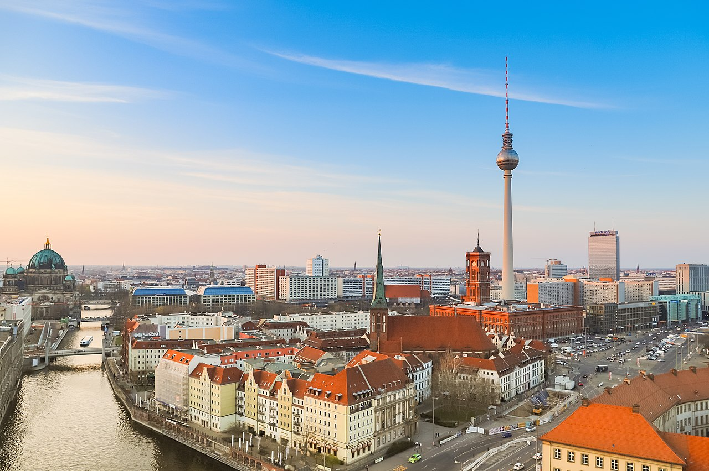

Germany: The great of Europe

Germany, officially the Federal Republic of Germany, is a country in Central Europe. It is the second most populous country in Europe after Russia , and the most populous member state of the European Union. Germany is situated between the Baltic and North seas to the north, and the Alps to the south; it covers an area of 357,022 square kilometres (137,847 sq mi), with a population of over 83 million within its 16 constituent states. Germany borders Denmark to the north , Poland and the Czech Republic to the east, Austria and Switzerland to the south, and France, Luxembourg, Belgium, and the Netherlands to the west. The nation's capital and largest city is Berlin and its financial centre is Frankfurt; the largest urban area is the Ruhr.
Germany is a beautiful country in Western Europe full of calming landscapes, forests, rivers, and mountains. This lovely country has a long and rich history and it is quite a popular tourist attraction as well as a study destination for international students.

Is well known for its well-preserved medieval old town, a destination for tourists from around the world.

Is one of the most iconic sights in today's vibrant Berlin. More than just Berlin's only surviving historical city gate, this site came to symbolise Berlin's Cold War division into East and West, since the fall of the Wall, a reunified Germany.

For a town where the wine is just as good as the views, head to Cochem on the slopes of the Moselle River. The city sits in Germany's Mosel-Saar-Ruwer region, famous for its riesling grapes that grow in hillside vineyards.

Dresden (map) is a historic city in eastern Germany, situated approximately 200km south of Berlin. Renowned for its historic Baroque architecture, the city is the capital of the state of Saxony and boasts a rich cultural heritage.

| State | Area (Km2) | Capital |
|---|---|---|
| Baden-Wurtemberg | 10,01 | Stuttgart |
| Baviera | 19,76 | Múnich |
| Berlín | 0,25 | Berlín |
| Brandeburgo | 8,26 | Potsdam |
| Bremen | 0,11 | Bremen |
| Rank | University | City |
|---|---|---|
| 1 | LMU Munich | Munich |
| 2 | Tecnhnical University of Munich | Munich |
| 3 | Heidelberg University | Heidelberg |
| 4 | Humboldt University of Berlin | Berlin |
| 5 | RWTH Aachen University | Aachen |
Germany has a number of large cities. There are 11 officially recognised metropolitan regions. The country's largest city is Berlin, while its largest urban area is the Ruhr.
|  |  |
|
 |
 |